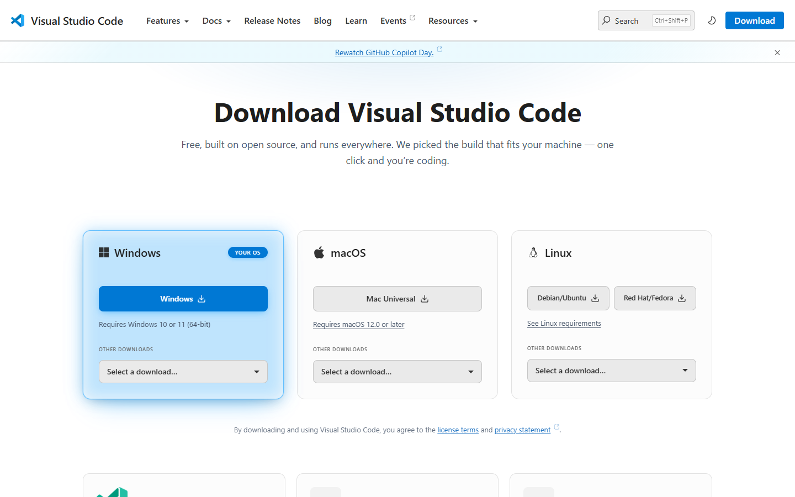
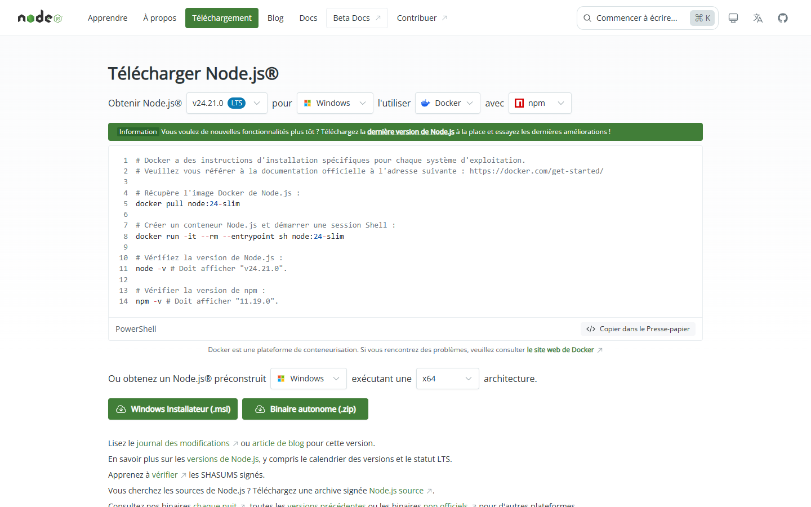
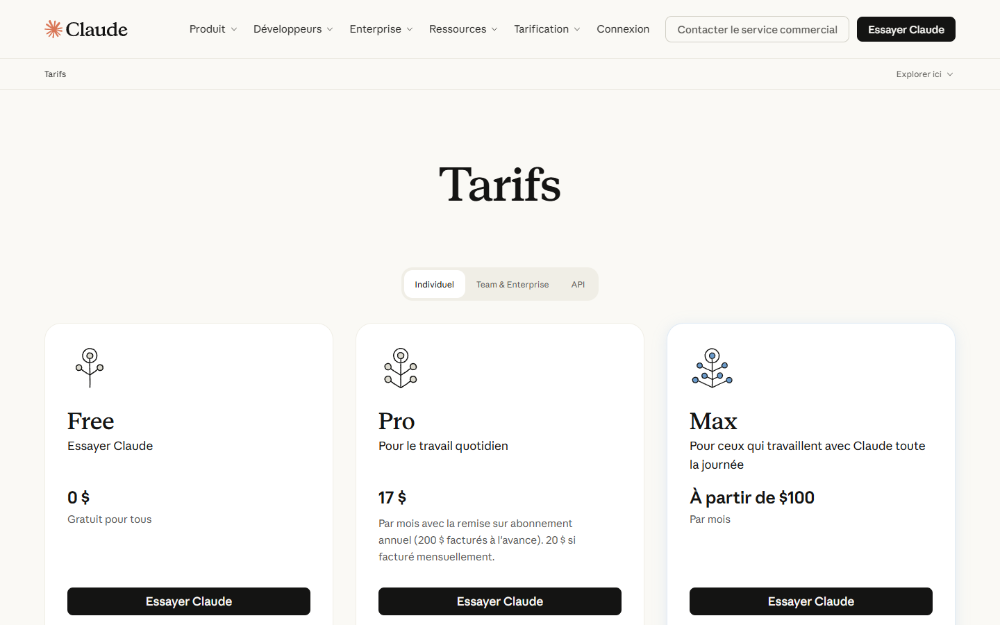

Before you start
Requirements
Everything to install before your first video with Pulse Motion. Never installed developer software before? This page is made for you: every step is explained click by click and ends with a simple check.
1 What you’ll need
Pulse Motion works inside Claude Code, Anthropic’s assistant. It makes your videos on your computer: no online service, no extra account, no video sent anywhere. You won’t have to write any code: you’ll download, click “Next”, and copy a few commands that this page gives you.
| Tool | What it’s for | Required? |
|---|---|---|
| VS Code and the Claude Code extension | Where you chat with Claude, next to your video’s files. | Recommended (the terminal or Claude Desktop work too) |
| A Claude subscription | Claude Code needs a Pro, Max, Team or Enterprise plan, or a Console account. | Yes |
| Node.js 20 or later | Runs Pulse Motion: assembly, checks, preview, export. Nothing else to install alongside it. | Yes |
| Chrome or Edge | Shows the video preview, checks the rendered video and makes the MP4. | Yes |
| ffmpeg | Makes the MP4 as a high-fidelity export, with clean sound, and imports voice recordings in any format. | Optional: Pulse Motion offers it at your first export |
| Python and transcription | Times the subtitles and animations to the actual words of your voice, and splits a recording of the whole video. | Optional: Pulse Motion offers it when you add a voice |
2 Install VS Code 10 min
VS Code (Visual Studio Code) is a free editor from Microsoft: it shows your video’s files (the timeline, the scenes), and it’s where you’ll chat with Claude.
Windows
- Open code.visualstudio.com/download and click the big Windows button (Windows 10 or 11).
- Open the downloaded file (
VSCodeUserSetup-x64-….exe, in your Downloads folder). Then, in the installer:- licence: tick I accept the agreement, then Next;
- install folder and Start menu folder: keep everything, Next;
- Additional Tasks: keep Add to PATH ticked. You can also tick the two “Add ‘Open with Code’ action” boxes: right-clicking a folder will then open it in VS Code;
- Install, then Finish.
Where to find it afterwards: Start menu, “Visual Studio Code”.
macOS
- Open code.visualstudio.com/download and click the big Mac button (the “Universal” version, for every Mac).
- Open the downloaded file, then drag Visual Studio Code into the Applications folder.
- Open it from Applications. The first time, macOS asks you to confirm: click Open.
Where to find it afterwards: Applications folder, “Visual Studio Code”.

VS Code’s menus are in English by default, and this page gives the English name of every menu.
On Windows, a blue “Windows protected your PC” window appears
Check that the file really comes from code.visualstudio.com, then click More info and Run anyway.
I’d rather have VS Code in French
Open the list of extensions (Ctrl + Shift + X, or Cmd + Shift + X on a Mac), search for “French Language Pack” published by Microsoft, install it, then restart VS Code.
3 Install Node.js 10 min
Node.js runs Pulse Motion: it assembles the video, checks it, serves the preview and makes the export. Pulse Motion needs no other component: nothing else to download.
Pulse Motion needs Node.js 20 or later. Take the version marked LTS (“long-term support”, the most stable).
If Claude Code and the plugin are already there but Node.js isn’t, Pulse Motion offers to install it for you, with your approval (on Windows, and on macOS with Homebrew); it then finds it without a restart.
Windows
- Open nodejs.org/fr/download.
- At the top, check that the selected version is marked LTS.
- Further down, click the Windows Installer (.msi) button.
- Open the downloaded file. Then, in the installer:
- first screen: Next;
- licence: tick the acceptance box, then Next;
- install folder and list of features: keep everything, Next;
- “Tools for Native Modules” screen: leave the box unticked, then Next. Pulse Motion doesn’t use these tools;
- Install, then Yes when Windows asks for permission, and finally Finish.
macOS
- Open nodejs.org/fr/download.
- At the top, check that the selected version is marked LTS.
- Further down, click the macOS Installer (.pkg) button.
- Open the downloaded file, then click Continue on each screen, Agree to the licence, and Install. Your Mac asks for your login password: type it in. Finish with Close.

Node.js has no window: it works behind the scenes. Close VS Code completely, reopen it, open the terminal (menu Terminal → New Terminal), then check:
node --versionThe version shown is older than 20
An older version of Node.js is already installed. Install the LTS version over it from nodejs.org, then close and reopen VS Code. Pulse Motion also reminds you at the start of every session for as long as the version is too old.
Later on, Pulse Motion says « node introuvable » (“node not found”) even though it’s installed
Claude Code reads the list of installed software when it starts. Close VS Code completely and reopen it (or Claude Desktop, or the terminal, depending on how you work).
4 The Claude subscription and the Claude Code extension 15 min
Claude Code is Anthropic’s assistant that works with you on the files in a folder. The extension adds it to VS Code, in a chat panel.
Take out a subscription
Claude Code needs a Claude Pro, Max, Team or Enterprise account, or a Console account (pay as you go). The free plan isn’t enough. If you’re starting out on your own, the Pro plan is the simplest.
- Open claude.com/pricing.
- Choose a plan and click its button. Create your account (or sign in), then pay for the subscription.
- Make a note of the email address you used: it’s the one you’ll sign in with in VS Code.

Install the extension
- In VS Code, press Ctrl + Shift + X (Windows) or Cmd + Shift + X (macOS): the list of extensions opens on the left.
- In the search box, type Claude Code.
- Choose the one published by Anthropic, then click Install.
Open the panel and sign in
- Click the spark-shaped icon in the vertical bar on the left, or ✻ Claude Code at the bottom right of the window.
- The first time, a sign-in screen appears: click Sign in, sign in in your browser with your subscription account, and accept.
- Go back to VS Code: the Claude panel shows a text box.
In the text box, type /: the list of available commands opens. This is how you’ll run Pulse Motion’s commands, such as /pulse-motion:creer.
Source: using Claude Code in VS Code.
The spark-shaped icon doesn’t appear
Restart VS Code. Or open the command palette (Ctrl + Shift + P, or Cmd + Shift + P on a Mac), type Developer: Reload Window and confirm.
The panel suggests upgrading to a paid plan
The account you used doesn’t have a compatible subscription. Check the email address you signed in with.
5 Install Claude Code for the terminal 10 min
The copy of Claude Code that comes with the extension only serves its panel. The plugin update commands, on the other hand, are typed in the terminal. So install Claude Code for the terminal too: just once, and then it keeps itself up to date.
In the VS Code terminal (menu Terminal → New Terminal):
Windows
The line must start with PS (PowerShell). Paste this command, then press Enter:
irm https://claude.ai/install.ps1 | iexmacOS
Paste this command, then press Enter:
curl -fsSL https://claude.ai/install.sh | bashClose VS Code completely, reopen it, open the terminal, then check:
claude --versionSource: the official Claude Code documentation.
“claude is not recognized” or “command not found: claude”
Close VS Code completely and reopen it. If the message is still there, follow the “Troubleshooting” part of the terminal guide.
On Windows: “irm is not recognized”
The terminal is the Command Prompt (CMD), not PowerShell. In the VS Code terminal, open the small arrow next to the + and choose PowerShell, then run the command again.
7 Install Pulse Motion and keep it up to date 5 min
Pulse Motion is a plugin (an add-on for Claude Code), stored in a catalogue called pulse-motion. First you add the catalogue, then the plugin.
Install, in VS Code
- In the Claude Code panel, type
/plugins, then press Enter: the Manage plugins window opens. - Click the Marketplaces tab. In the box for adding a catalogue, type
jdelauney/pulse-motionand confirm. - Go back to the Plugins tab. Search for
pulse-motion, then click Install. Choose Install for you: Pulse Motion will be available in all your folders. - Close VS Code completely and reopen it.
Or: install in Claude Code
In the Claude Code panel, or in Claude Code started from a terminal (the claude command), type one line at a time:
/plugin marketplace add jdelauney/pulse-motion/plugin install pulse-motion@pulse-motionChoose Install for you (user scope) if asked, then restart Claude Code.
Check
In the Claude Code panel, type /pulse-motion: (without pressing Enter).
Update
Pulse Motion’s fixes only reach you after an update. In the VS Code terminal:
claude plugin marketplace update pulse-motion
claude plugin update pulse-motion@pulse-motionThen close VS Code completely and reopen it: the new version loads at startup.
Stop thinking about it: automatic updates
- In the VS Code terminal, type
claude, then press Enter. - Type
/plugin, then press Enter. - Open the Marketplaces tab (the Tab key moves from one tab to the next).
- Choose
pulse-motion, then Enable auto-update. - Quit with
exit.
Sources: the Pulse Motion repository and installing and managing plugins.
The /pulse-motion: commands don’t appear
Close VS Code completely and reopen it. If they’re still missing, type /plugins: pulse-motion must be listed in the Plugins tab, with its switch turned on. A plugin that couldn’t load shows the reason on its line.
Adding the catalogue fails
Check your internet connection and the exact spelling: jdelauney/pulse-motion. Then try again.
8 Optional: ffmpeg, for the high-fidelity export 5 min
ffmpeg is a small piece of free software that makes the video in high quality, with clean sound. Without it, Pulse Motion still exports, directly in the browser. With it, the export is high-fidelity: the browser’s real frames, and sound measured at the right level.
The simplest way: do nothing for now. At your first /pulse-motion:exporter, Pulse Motion checks whether ffmpeg is there and offers to install it, with your approval. If you’d rather install it yourself:
Windows
In the VS Code terminal:
winget install --id Gyan.FFmpeg -e --accept-source-agreements --accept-package-agreementsmacOS
With Homebrew installed, in the terminal:
brew install ffmpegClose VS Code completely and reopen it, then check:
ffmpeg -versionOn Linux, Pulse Motion gives me a command to type
The installation needs your password: Pulse Motion can’t run it for you. Type the command it gives you in a terminal, then tell it you’re done.
9 Optional: voice transcription 10 min
When you add your voice, transcription finds the exact moment of each word. The subtitles and animations are then timed to your actual words. It’s essential for splitting a recording of the whole video into scenes. Without it, everything still works: the words are timed as well as possible.
It runs on your computer, with Python and a speech recognition model (about 800 MB, or 250 MB for the lighter version). The simplest way, once again: wait for Pulse Motion to offer it during /pulse-motion:creer. With your approval, it installs Python if needed, then transcription, in a few minutes.
Installing transcription failed
Pulse Motion tells you in one sentence and carries on without it: the video is made, and the words are timed as well as possible. You can try again later by asking « installe la transcription » (“install the transcription”).
10 Final check 5 min
- Create an empty folder, for example
chaine-du-froid, wherever you keep your documents. One video = one folder. - In VS Code, menu File → Open Folder…, choose that folder. If VS Code asks, trust its authors: it’s your folder.
- Open the Claude Code panel and type
/pulse-motion:.